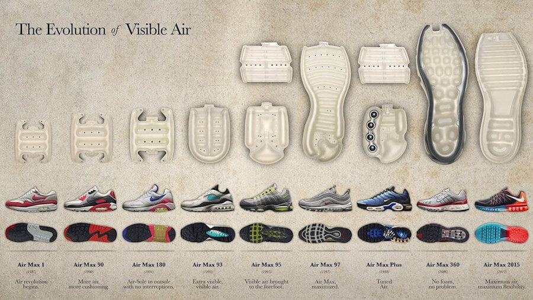

Nike: Del Swoosh al Streetwear Multiverso
Año de fundación: 1964 (como Blue Ribbon Sports) / 1971 (Nike)
Fundadores: Phil Knight y Bill Bowerman

Running, Basketball… y luego la calle
Las Air Force 1 (1982) y las Dunk (1985) fueron adoptadas por el hip‑hop y el skate antes de que Nike aceptara oficialmente a esas comunidades. Con el tiempo, las Air Jordan trascendieron el deporte y cimentaron la cultura sneaker.
Estrategia colaborativa
Los 2000 trajeron partnerships con Stüssy, Supreme y artistas como Travis Scott, mezclando high‑fashion con el Swoosh. El programa Nike SB (2002) legitimó el skate dentro de la gran marca.
Futuro
Nike empuja límites con colecciones sostenibles Move to Zero y experiencias virtuales en .SWOOSH, demostrando que el streetwear ahora vive tanto en el metaverso como en la acera.
Fecha de Publicación: 05/06/2025